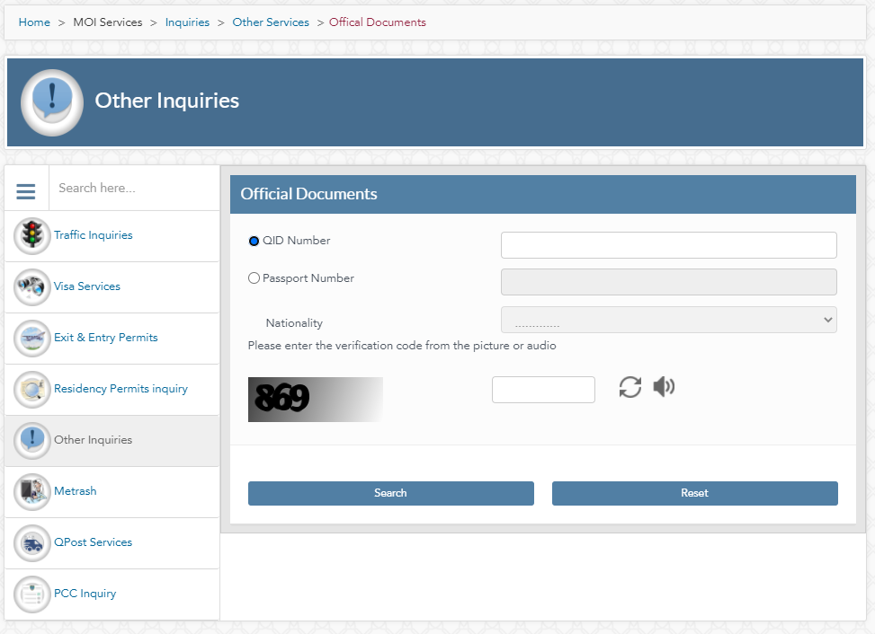

Here's a step-by-step guide on how to check your Qatar ID status online in Qatar.
By Hassam AnsariUpdated : 10/01/2024- Visit the MOI Portal:
- Open your web browser and go to the official Ministry of Interior (MOI) Qatar website Or Click Here
- Navigate to Inquiries:
- Once on the portal, click on the "Inquiries" tab, usually located in the top menu or on the homepage.
- Select "Other Inquiries":
- Under the Inquiries section, choose the option "Other Inquiries."
- Choose "Official Documents":
- From the available options, select "Official Documents." This is where you can check the status of your Qatar ID.."
- Enter Your ID Information:
- On the Official Documents page, you'll be prompted to provide either your Qatar ID number or your passport number. Enter the information accurately."
- You might also need to enter your nationality and CAPTCHA code for verification.
- Submit and View Results:
- Click on the "Search" button to submit your query.
- The system will then display the status of your Qatar ID, including its validity and expiry date. You might also see the status of your passport and driving license, if applicable.

Additional Information :
- Language Options: The MOI portal offers both English and Arabic language options. You can change the language to your preference.
- Renewal Information: If your Qatar ID is nearing expiry, you can initiate the renewal process through the MOI portal or by visiting a MOI service center in person.
- Technical Issues: If you encounter any technical problems or have further inquiries, you can contact the MOI helpline at 2342000.